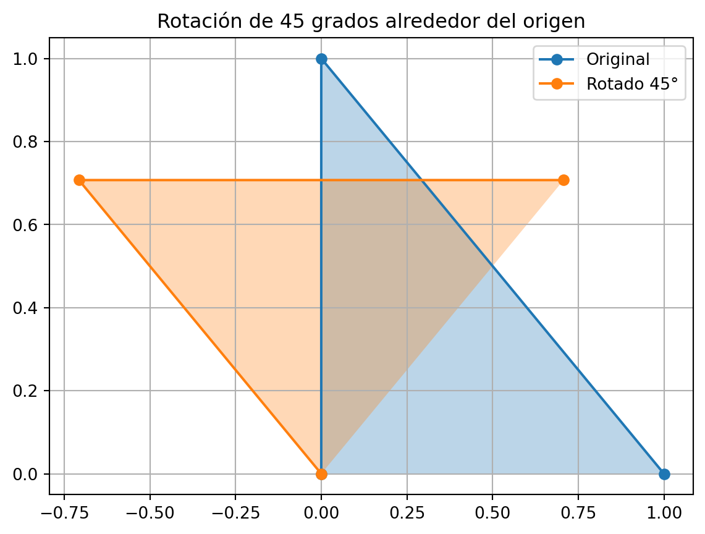

import matplotlib.pyplot as plt
import numpy as np
# Puntos originales
triangle = np.array([[1, 2], [2, 4], [3, 2]])
# Traslación
translation = np.array([2, 1])
translated_triangle = triangle + translation
# Gráfica
plt.figure()
plt.plot(*triangle.T, label="Original", marker="o")
plt.plot(*translated_triangle.T, label="Trasladado", marker="o")
plt.legend()
plt.title("Traslación de un Triángulo")
plt.grid(True)
plt.show()title: “Guía de Transformaciones Rígidas en el Plano” format: pdf jupyter: python3
Introducción
En este documento, exploraremos las transformaciones rígidas en el plano. Las transformaciones rígidas preservan la distancia y los ángulos entre puntos, lo que significa que la forma del objeto no cambia, solo su posición y orientación.
1. Traslación
La traslación desplaza una figura en el plano sin cambiar su orientación.
Rotación
import numpy as np
import matplotlib.pyplot as plt
# Función de rotación desde el origen
def rotate(points, angle):
angle_rad = np.radians(angle)
rotation_matrix = np.array([
[np.cos(angle_rad), -np.sin(angle_rad)],
[np.sin(angle_rad), np.cos(angle_rad)]
])
# Aplicar la rotación desde el origen
rotated_points = np.dot(points, rotation_matrix.T)
return rotated_points
# Puntos de un triángulo
triangle = np.array([[0, 0], [0, 1], [1, 0]])
# Ángulo de rotación (en grados)
angle = 45
# Aplicar rotación desde el origen
rotated_triangle = rotate(triangle, angle)
# Imprimir coordenadas antes y después de la rotación
print("Coordenadas originales:")
print(triangle)
print("\nCoordenadas después de rotar", angle, "grados desde el origen:")
print(rotated_triangle)
# Graficar los triángulos original y rotado
plt.figure()
plt.plot(*triangle.T, label="Original", marker="o")
plt.plot(*rotated_triangle.T, label=f"Rotado {angle}°", marker="o")
plt.fill(*triangle.T, alpha=0.3)
plt.fill(*rotated_triangle.T, alpha=0.3)
plt.legend()
plt.title(f"Rotación de {angle} grados alrededor del origen")
plt.grid(True)
plt.show()Coordenadas originales:
[[0 0]
[0 1]
[1 0]]
Coordenadas después de rotar 45 grados desde el origen:
[[ 0. 0. ]
[-0.70710678 0.70710678]
[ 0.70710678 0.70710678]]
Refelxion
def reflect(points, axis='x'):
if axis == 'x':
reflection_matrix = np.array([[1, 0], [0, -1]])
elif axis == 'y':
reflection_matrix = np.array([[-1, 0], [0, 1]])
return np.dot(points, reflection_matrix)
# Reflexión sobre el eje x
reflected_triangle = reflect(triangle, axis='x')
# Gráfica
plt.figure()
plt.plot(*triangle.T, label="Original", marker="o")
plt.plot(*reflected_triangle.T, label="Reflejado sobre el eje x", marker="o")
plt.legend()
plt.title("Reflexión de un Triángulo")
plt.grid(True)
plt.show()TRansformaciones compuestas
import numpy as np
import matplotlib.pyplot as plt
# Función de rotación desde el origen
def rotation_matrix(angle):
angle_rad = np.radians(angle)
return np.array([
[np.cos(angle_rad), -np.sin(angle_rad)],
[np.sin(angle_rad), np.cos(angle_rad)]
])
# Función de traslación (en forma matricial)
def translation_matrix(translation):
tx, ty = translation
return np.array([
[1, 0, tx],
[0, 1, ty],
[0, 0, 1]
])
# Función de reflexión
def reflection_matrix(axis):
if axis == 'x':
return np.array([[1, 0], [0, -1]])
elif axis == 'y':
return np.array([[-1, 0], [0, 1]])
else:
raise ValueError("Eje no válido. Usa 'x' o 'y'.")
# Aplica transformación de rotación
def apply_rotation(points, angle):
rot_matrix = rotation_matrix(angle)
return np.dot(points, rot_matrix.T)
# Aplica transformación de traslación
def apply_translation(points, translation):
# Convertimos los puntos a coordenadas homogéneas
ones_column = np.ones((points.shape[0], 1))
homogenous_points = np.hstack([points, ones_column])
trans_matrix = translation_matrix(translation)
# Aplicamos la transformación de traslación
translated_points = np.dot(homogenous_points, trans_matrix.T)
# Volvemos a las coordenadas cartesianas
return translated_points[:, :2]
# Aplica reflexión
def apply_reflection(points, axis):
refl_matrix = reflection_matrix(axis)
return np.dot(points, refl_matrix.T)
# Definimos los puntos de un triángulo
triangle = np.array([[0, 0], [1, 0], [0, 1]])
# Parámetros de transformación
angle = 45 # Ángulo de rotación
translation_vector = [2, 3] # Vector de traslación
reflection_axis = 'x' # Reflexión sobre el eje x
# 1. Aplicar rotación
rotated_triangle = apply_rotation(triangle, angle)
print("Matriz de Rotación:")
print(rotation_matrix(angle))
print("Coordenadas del Triángulo después de la Rotación:")
print(rotated_triangle)
# 2. Aplicar traslación
translated_triangle = apply_translation(rotated_triangle, translation_vector)
print("\nMatriz de Traslación:")
print(translation_matrix(translation_vector))
print("Coordenadas del Triángulo después de la Traslación:")
print(translated_triangle)
# 3. Aplicar reflexión
reflected_triangle = apply_reflection(translated_triangle, reflection_axis)
print("\nMatriz de Reflexión sobre el eje", reflection_axis + ":")
print(reflection_matrix(reflection_axis))
print("Coordenadas del Triángulo después de la Reflexión:")
print(reflected_triangle)
# 4. Composición de todas las transformaciones
# Comenzamos con la matriz de identidad
composite_matrix = np.eye(3)
# Incorporamos la rotación (convertimos a forma homogénea)
rotation_homogeneous = np.eye(3)
rotation_homogeneous[:2, :2] = rotation_matrix(angle)
# Multiplicamos por la traslación
composite_matrix = np.dot(translation_matrix(translation_vector), rotation_homogeneous)
# Impresión de la matriz compuesta (Rotación seguida de Traslación)
print("\nMatriz Compuesta (Rotación seguida de Traslación):")
print(composite_matrix)
# La reflexión no se puede representar directamente en coordenadas homogéneas,
# así que la aplicamos por separado en las coordenadas finales.
# Graficar los triángulos original, rotado, trasladado y reflejado
plt.figure()
# Original
plt.plot(*triangle.T, label="Original", marker="o")
plt.fill(*triangle.T, alpha=0.3)
# Rotado
plt.plot(*rotated_triangle.T, label="Rotado 45°", marker="o")
plt.fill(*rotated_triangle.T, alpha=0.3)
# Trasladado
plt.plot(*translated_triangle.T, label="Trasladado", marker="o")
plt.fill(*translated_triangle.T, alpha=0.3)
# Reflejado
plt.plot(*reflected_triangle.T, label="Reflejado sobre eje x", marker="o")
plt.fill(*reflected_triangle.T, alpha=0.3)
plt.legend()
plt.title("Transformaciones Rígidas: Rotación, Traslación y Reflexión")
plt.grid(True)
plt.show()Matriz de Rotación:
[[ 0.70710678 -0.70710678]
[ 0.70710678 0.70710678]]
Coordenadas del Triángulo después de la Rotación:
[[ 0. 0. ]
[ 0.70710678 0.70710678]
[-0.70710678 0.70710678]]
Matriz de Traslación:
[[1 0 2]
[0 1 3]
[0 0 1]]
Coordenadas del Triángulo después de la Traslación:
[[2. 3. ]
[2.70710678 3.70710678]
[1.29289322 3.70710678]]
Matriz de Reflexión sobre el eje x:
[[ 1 0]
[ 0 -1]]
Coordenadas del Triángulo después de la Reflexión:
[[ 2. -3. ]
[ 2.70710678 -3.70710678]
[ 1.29289322 -3.70710678]]
Matriz Compuesta (Rotación seguida de Traslación):
[[ 0.70710678 -0.70710678 2. ]
[ 0.70710678 0.70710678 3. ]
[ 0. 0. 1. ]]
TRansformaciones lineales
Una transformación lineal es una función entre dos espacios vectoriales que preserva las operaciones básicas de suma de vectores y multiplicación por un escalar. Formalmente, si \(T: V \to W\) es una transformación lineal entre dos espacios vectoriales \(V\) y \(W\), entonces para todos los vectores \(\mathbf{u}, \mathbf{v} \in V\) y todo escalar \(c\), se cumple que:
- \(T(\mathbf{u} + \mathbf{v}) = T(\mathbf{u}) + T(\mathbf{v})\) (preserva la suma de vectores)
- \(T(c \mathbf{u}) = c T(\mathbf{u})\) (preserva la multiplicación por un escalar)
Esto significa que una transformación lineal no altera la estructura lineal de los espacios vectoriales involucrados. Ejemplos comunes de transformaciones lineales incluyen rotaciones, reflexiones, escalas y proyecciones en el plano o en el espacio tridimensional.
El dominio de una transformación lineal \(T: V \to W\) es el conjunto de todos los vectores en el espacio vectorial \(V\) sobre los cuales \(T\) está definida. Es decir, es el conjunto de entrada de la función.
El rango de una transformación lineal \(T\) es el conjunto de todos los vectores en el espacio vectorial \(W\) que pueden ser obtenidos como la imagen de algún vector en \(V\). Formalmente, el rango de \(T\) es $ (T) = { T() : V } $.
El núcleo (o kernel) de una transformación lineal \(T\) es el conjunto de todos los vectores en \(V\) que son mapeados al vector cero en \(W\). Es decir, el núcleo de \(T\) es $ (T) = { V : T() = } $.
El rango y el núcleo son importantes porque nos permiten entender las propiedades fundamentales de una transformación lineal, como su inyectividad y sobreyectividad.
Teorema
Toda transformación lineal \(T: V \to W\) entre espacios vectoriales finito-dimensionales puede ser representada por una matriz. Dicho de otra forma, para cada transformación lineal \(T\) existe una matriz \(A\) tal que \(T(\mathbf{v}) = A \mathbf{v}\) para todo \(\mathbf{v} \in V\).
Ejemplo
Consideremos la transformación lineal \(T: \mathbb{R}^2 \to \mathbb{R}^2\) definida por \(T(\mathbf{v}) = \begin{bmatrix} 2 & 1 \\ 1 & 2 \end{bmatrix} \mathbf{v}\). Para encontrar la matriz asociada a esta transformación, simplemente debemos escribir los vectores canónicos de \(\mathbb{R}^2\) como columnas de la matriz:
\[ T(\mathbf{e}_1) = \begin{bmatrix} 2 & 1 \\ 1 & 2 \end{bmatrix} \begin{bmatrix} 1 \\ 0 \end{bmatrix} = \begin{bmatrix} 2 \\ 1 \end{bmatrix} \]
Para escribir una transformación lineal y encontrar la matriz de transformación asociada, sigamos un ejemplo sencillo.
Ejemplo:
Considera una transformación lineal \(T: \mathbb{R}^2 \to \mathbb{R}^2\) que rota los vectores en \(\mathbb{R}^2\) en 90 grados en sentido antihorario.
Paso 1: Definir la transformación lineal
Una transformación lineal \(T\) se define por su acción sobre los vectores del espacio vectorial. Si \(\mathbf{v} = \begin{pmatrix} x \\ y \end{pmatrix}\) es un vector en \(\mathbb{R}^2\), la transformación \(T\) rota este vector 90 grados en sentido antihorario. La fórmula general para rotar un vector 90 grados en sentido antihorario es:
\[ T\left( \begin{pmatrix} x \\ y \end{pmatrix} \right) = \begin{pmatrix} -y \\ x \end{pmatrix} \]
Paso 2: Encontrar la matriz de transformación asociada
Para encontrar la matriz de transformación asociada a \(T\), necesitamos saber cómo actúa \(T\) sobre las bases estándar de \(\mathbb{R}^2\). Las bases estándar en \(\mathbb{R}^2\) son los vectores:
\[ \mathbf{e}_1 = \begin{pmatrix} 1 \\ 0 \end{pmatrix}, \quad \mathbf{e}_2 = \begin{pmatrix} 0 \\ 1 \end{pmatrix} \]
Ahora, aplicamos la transformación \(T\) a cada uno de estos vectores base:
- \(T(\mathbf{e}_1) = T\left( \begin{pmatrix} 1 \\ 0 \end{pmatrix} \right) = \begin{pmatrix} 0 \\ 1 \end{pmatrix}\)
- \(T(\mathbf{e}_2) = T\left( \begin{pmatrix} 0 \\ 1 \end{pmatrix} \right) = \begin{pmatrix} -1 \\ 0 \end{pmatrix}\)
La matriz de transformación asociada a \(T\), que denotamos por \([T]\), tiene como columnas las imágenes de los vectores de la base estándar bajo la transformación \(T\). Es decir:
\[ [T] = \begin{pmatrix} T(\mathbf{e}_1) & T(\mathbf{e}_2) \end{pmatrix} = \begin{pmatrix} 0 & -1 \\ 1 & 0 \end{pmatrix} \]
Por lo tanto, la matriz de transformación asociada a la rotación de 90 grados es:
\[ [T] = \begin{pmatrix} 0 & -1 \\ 1 & 0 \end{pmatrix} \]
Paso 3: Verificación
Para verificar que esta matriz de transformación es correcta, aplicamos \([T]\) a un vector genérico \(\mathbf{v} = \begin{pmatrix} x \\ y \end{pmatrix}\):
\[ [T] \begin{pmatrix} x \\ y \end{pmatrix} = \begin{pmatrix} 0 & -1 \\ 1 & 0 \end{pmatrix} \begin{pmatrix} x \\ y \end{pmatrix} = \begin{pmatrix} -y \\ x \end{pmatrix} \]
Lo cual es exactamente el resultado esperado de rotar el vector \(\mathbf{v}\) en 90 grados.
Resumen:
- La transformación lineal \(T\) rota los vectores de \(\mathbb{R}^2\) en 90 grados en sentido antihorario.
- La matriz de transformación asociada a \(T\) es:
\[ [T] = \begin{pmatrix} 0 & -1 \\ 1 & 0 \end{pmatrix} \]
Este es un ejemplo de cómo definir una transformación lineal y encontrar la matriz de transformación asociada a dicha transformación.